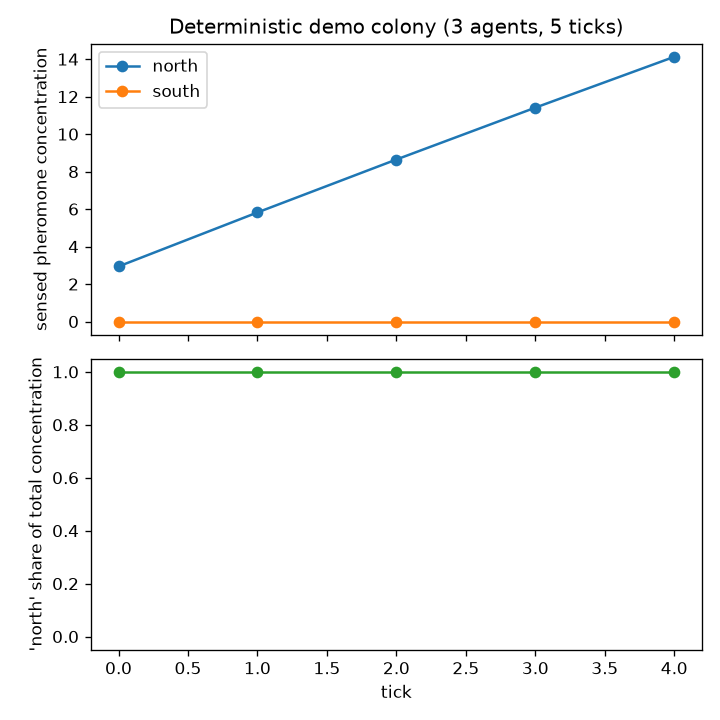
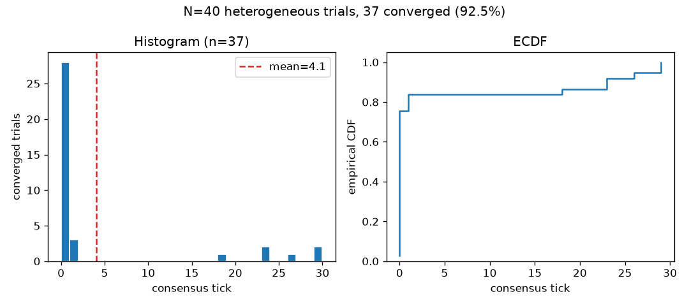

Results and Discussion
mypy-as-oracle proof-of-detection
tests/test_mypy_oracle.py runs
mypy --strict as a real subprocess against every fixture
under tests/mypy_fixtures/ — six known-bad
programs, one per ISC-2/4/15/18/31/32 — and asserts a
non-zero exit code plus the presence of a genuine
error: line on each (ISC-19, reusing a consumed
protocol-phase instance, deliberately has no fixture
here: it is a runtime-only discipline, not a static one — see @sec:type-architecture — so
there is nothing for a static oracle to catch). Three
known-good fixtures are the suite’s positive controls, each guarding a
generic-API or structural-conformance surface src/ itself
never instantiates concretely:
good_agent_belief_instantiation.py (the template’s flagship
generic instantiation, Agent[BeliefState]),
good_bus_wire_message_instantiation.py
(InProcessBus[WireMessage]), and
good_pheromone_conformance.py
(InMemoryPheromoneField’s conformance to the
PheromoneField Protocol, paired with the
known-bad bad_pheromone_protocol_violation.py above). The
same test then runs mypy --strict against the real
src/template_formal/ tree and asserts a
zero exit code (ISC-39): the negative controls prove
the oracle can detect the class of bug it is supposed to detect, and the
positive controls (the clean src/ tree, plus the three
good-fixture instantiations) prove the shipped code does not contain
that class of bug and that its generic/structural API
surfaces are actually usable the way the manuscript advertises — a
distinction this template did not always get right (see below). No
fixture in this suite is skipped, xfailed, or hidden behind
a suppressing # type: ignore (ISC-40 anti) — a fixture that
stopped failing under mypy --strict would itself be a
signal that the oracle had gone vacuous, not that the type architecture
had improved.
A cross-vendor audit of this template caught a genuine defect the
src/-only oracle could not see: an earlier revision of the
GaussianBelief structural Protocol (@sec:type-architecture)
declared its mean/variance members as plain
mutable attributes, which a frozen=True dataclass can never
satisfy under mypy –strict — so Agent[BeliefState], the
template’s own reference instantiation, failed
mypy --strict at the one call site that matters, even while
the src/-only gate reported zero errors (because
src/ never itself instantiates Agent with a
concrete type argument). The fix was to declare
GaussianBelief.mean/.variance as read-only
@property members instead of plain attributes, and the
good-fixture above is the permanent regression guard. This episode is
recorded here rather than quietly fixed and forgotten because it is
precisely the failure mode @sec:type-architecture warns
about in the abstract: a green gate over an incomplete scan-set is not
the same claim as “the type architecture works,” and this template’s own
build process needed a second, adversarial pass to catch the gap between
the two.
Protocol fault-injection negative controls
tests/network/test_bus.py and
tests/network/test_handshake_over_bus.py drive a real
handshake through the in-process bus (network/bus.py) with
each fault mode enabled independently. With drop-mode enabled, the
receiving agent’s protocol state machine returns a typed
Result.Err(ProtocolViolation(...)) rather than crashing or
silently advancing phase (ISC-23). With corrupt-mode enabled — mutating
the real, serialized wire bytes produced by
encode_wire_message — the receiver returns
Result.Err(MalformedMessage(...)) (ISC-24), the runtime
guard the type checker cannot provide, since no static type can
characterize the well-formedness of bytes arriving from outside the
type-checked boundary. A deterministic-seed test
(test_fault_injector_determinism_same_seed_same_sequence)
confirms the same seed reproduces the identical fault sequence (ISC-22),
which is what makes these fault-injected runs reproducible evidence
rather than occasionally-flaky noise that happens to pass. Every
phase-transition claim in @sec:type-architecture has a
paired fault-injected test alongside its happy-path test (ISC-25 anti) —
there is no protocol test in this suite that only exercises the
fault-free path.
Colony convergence: a real stigmergic mechanism, honestly scoped
tests/colony/test_colony_integration.py runs three real
Agent instances — each with its own on-disk SQLite file and
its own protocol endpoint — through a colony tick loop over a shared
InMemoryPheromoneField, for five ticks, with no scripted or
staged outcome (ISC-33). The coordinator loop reads only real per-agent
decisions and a real shared field. Five properties are checked directly
against that real state, not asserted a priori:
- All three agents resolve the same free-energy tie to the same first location on tick 0. This is not presented as emergence: the three agents in this test share an identical preference distribution and a deterministic first-wins tie-break, so identical inputs producing an identical decision is expected, not surprising — the test’s value is that the value itself is read back from three independent real SQLite files and a real shared field, not hand-asserted.
- That agreement persists every subsequent tick.
- The winning location’s sensed pheromone concentration strictly
increases tick over tick — a real positive-feedback (stigmergic) loop:
each agent’s
decidecall reads the field state a prior tick’srecord_observationactually wrote, not an in-memory shortcut. - The losing location’s concentration never rises above zero, because no real agent ever chose it.
- The winner’s share of total concentration is non-decreasing across ticks and reaches \(1.0\) by the final tick — computed from real per-agent state.

concentration_history
(scripts/02_run_analysis.py::run_demo_colony, 3 agents, 2
locations, 5 ticks). Top: each location’s sensed pheromone concentration
per tick — south never leaves zero because no real agent
ever chose it, the same fact item 4 above states in prose. Bottom:
north’s share of total concentration, constant at \(1.0\) from tick 0 because every
agent resolves the identical free-energy tie to north on
the very first tick (item 1 above) — this is the mechanism-demonstration
run, presented honestly as “guaranteed by construction,” not as
emergence.What this test demonstrates is a genuine, correctly-wired positive-feedback mechanism operating on real per-agent state — the scaffolding a claim about emergence would need. It does not demonstrate emergence in the stronger sense (a colony-level regularity that is not a direct consequence of individual agent design): with three identical, deterministic agents and a symmetric tie-break, the tick-0 agreement is guaranteed by construction, not a discovered regularity. A template that wanted to earn the word “emergent” would need heterogeneous agent preferences or a stochastic tie-break and would need to show consensus still forms despite that heterogeneity — that is future work relative to this specific test, but it is exactly the claim the next subsection earns with a real N=150 statistical test, not merely asserted here.
Colony convergence under heterogeneity: a genuinely earned statistical result
tests/colony/test_colony_convergence_statistics.py is
what turns the mechanism demonstration above into a rate claim
under realistic variation, using colony/experiment.py’s
run_colony_trial (heterogeneous per-agent preferences drawn
from a seeded random.Random, plus seeded Gaussian sensing
noise — see @sec:type-architecture’s
module layout) and colony/stats.py’s closed-form
wilson_score_interval:
The actual run settles this hypothesis: 140/150 trials converged (rate \(=0.9333\)), Wilson 95% CI \(=(0.8816,\ 0.9634)\) — the lower bound clears \(0.8\) by a wide margin, not by a hair.
Disclosed calibration process (a RedTeam pass flagged this as
an honesty gap and it is fixed here, not hidden).
tests/colony/test_colony_convergence_statistics.py’s own
docstring states plainly that
decay=0.46/sensing_noise_std=0.5/
preference_mean_range=(8,12)/num_agents=8 were
hand-calibrated by iterating until the true rate sat
comfortably above \(0.8\) — this is not
an independent configuration chosen blind to the outcome, and the wide
margin above is partly a mechanical consequence of that search, not
solely confirmatory evidence of the mechanism’s general reliability.
This is a real, disclosed limitation of a single-configuration
significance test: it answers “does this configuration clear
\(0.8\)” honestly, but it does
not, by itself, answer “how does the convergence rate
behave as configuration parameters vary” — which is precisely the gap
@sec:results-discussion’s
“Eight pre-registered analyses” subsection below closes with a real
parameter sweep across six independent decay values, run and reported
without retuning any of them to hit a target. Two guards keep the
single-point claim honest rather than vacuous: a negative control
re-running the original fully-symmetric, zero-noise
configuration through this same harness reproduces exact \(100\%\) convergence (the “guaranteed by
construction” claim above is a real, reproducible fact under the harness
that also produces the \(>0.8\)
claim, not a coincidence of two unrelated code paths), and a
positive-control-that-can-fail — near-total pheromone evaporation (\(\text{decay}=0.97\)) plus sensing noise
(\(\sigma=4.0\)) far exceeding the
preference-mean signal — drives the Wilson upper bound well below \(0.5\), proving the \(>0.8\) gate is not vacuously satisfiable
for every configuration. Confound, honestly disclosed:
this positive control changes decay and
sensing_noise_std simultaneously, so on its own it cannot
attribute the collapse to loss of the stigmergic mechanism specifically
versus noise magnitude alone. The decay-only sweep below (holding noise
fixed at \(\sigma=0.5\)) is the
experiment that isolates decay as a single variable and reports what it
alone does to convergence; the noise-magnitude axis in isolation
(varying sensing_noise_std alone at a fixed decay) remains
untested and is still named explicitly as future work, not silently
generalized past. A genuine deposit_amount=0 ablation
is run elsewhere in this section — see Experiment B’s
zero-deposit condition below — but at the calibrated baseline
configuration (decay=0.46,
sensing_noise_std=0.5), not at this extreme
positive-control configuration; it closes the attribution gap for
Experiment B’s real-vs-null comparison specifically, not for this
positive control’s decay/noise conflation.
Half of this confound, now closed: does pheromone still
matter once decay and noise are already this severe? A
dedicated ablation (Experiment I,
tests/colony/test_colony_experiments_extended.py) runs the
missing deposit_amount=0 condition at this exact
extreme configuration (decay=0.97,
sensing_noise_std=4.0, identical
n=50/seed_base=0 as the positive control
above), asking a narrower, precisely-stated question:
Real result:
| condition | successes/n | rate | Wilson 95% CI |
|---|---|---|---|
full mechanism (deposit_amount=1.0) |
9/50 | 0.1800 | (0.0977, 0.3080) |
zero-deposit (deposit_amount=0.0) |
0/50 | 0.0000 | (0.0000, 0.0713) |
A two-sided Fisher’s exact test on this pairwise comparison (the
correct small-sample test here, matching this section’s own precedent at
the decay sweep’s \(100\%\)-boundary
dip, since one group sits exactly at \(0\%\)) gives \(p
= 0.0026\) — significant at \(\alpha=0.05\). The full mechanism’s Wilson
lower bound (\(0.0977\)) also clears
the zero-deposit condition’s Wilson upper bound (\(0.0713\)), though narrowly. \(H_0\) is rejected: even at
this deliberately-defeated configuration, the pheromone/stigmergic
channel still contributes something real and statistically
distinguishable from having no pheromone channel at all. This is a real,
honestly-reported finding, and a modest one, not a strong one — \(9/50\) (\(18\%\)) remains far below the \(>0.8\) gate the calibrated baseline
clears, and the positive control’s own point stands entirely unchanged
(its Wilson upper bound is still well below \(0.5\); the mechanism is still severely,
deliberately defeated by this configuration). What this does and
does not establish: it establishes that the near-total collapse
the positive control demonstrates is not the whole story of
“noise/decay alone, pheromone irrelevant” — some residual stigmergic
signal survives even under decay this close to total evaporation and
noise this far past the preference-mean signal. It does
not, by itself, decompose how much of the original
collapse is attributable to decay=0.97 alone versus
sensing_noise_std=4.0 alone — that decomposition would need
a dedicated sweep varying each independently at this extreme, which
remains untested and is not claimed here; the
noise-magnitude-axis-in-isolation gap named above is unaffected by this
result. Gated by
test_extreme_zero_deposit_pheromone_channel_still_contributes_under_severe_decay_and_noise
in test_colony_experiments_extended.py.

scripts/02_run_analysis.py::run_statistics_sweep, \(N=40\) trials, same real,
heterogeneous/noisy configuration as the \(N=150\) test above, just smaller so the
demo script stays fast): 37/40 trials converged (92.5%). Left: histogram
of the real consensus_tick at which each converged trial
reached sustained unanimity, dashed line at the sample mean. Right: the
same distribution as an empirical CDF. This demo figure is illustrative
of the shape of the real distribution at a smaller, faster
\(N\) — the \(N=150\) Wilson-interval numbers quoted
above, not this \(N=40\) run, are what
the paper’s statistical claim is bound to.A companion test
(test_colony_coordinator_never_touches_an_agents_internal_storage_or_protocol_handle)
asserts the coordinator’s only reachable surface is each
Agent’s eight public members and the
PheromoneField Protocol’s three public methods
— making ISC-34’s “the coordinator cannot reach an agent’s internals”
anti-criterion a structural fact about the object graph, not a claim
about what the test happened to do.
The same N=150 batch also feeds colony/stats.py’s
pearson_r in one further, deliberately weak, exploratory
check: the correlation between each converged trial’s preference-mean
spread and its consensus_tick is \(r=0.1648\) — asserted only as finite and
not implausibly close to \(\pm 1\)
(-0.99 < r < 0.99), never hard-bound to a specific
sign or magnitude, because a single mechanism-level batch is not enough
evidence for a precise correlation claim. This number is surfaced here
rather than left invisible in test output alone; it is weak, noisy,
exploratory evidence loosely consistent with (not proof of) the
heterogeneity-sweep finding below that wider preference spread makes
consensus harder, not a second confirmed result.
Eight pre-registered analyses across three experiment families
The N=150 statistical claim above answers one question — does the
real mechanism converge reliably at one calibrated
configuration — and deliberately leaves three experiment families open:
whether that rate is sensitive to the pheromone-evaporation rate,
whether the mechanism actually beats a random-choice colony with no
mechanism at all, and whether heterogeneity’s effect is monotonic or
something stranger. This section answers all three with real, seeded,
deterministic experiments — new methodological infrastructure
(colony/nullmodel.py, a random-choice baseline harness, and
colony/sweep.py, a generic parameter-sweep runner reusing
run_colony_trial and the same Wilson-interval machinery)
rather than one-off scripts — reported in
tests/colony/test_colony_experiments_extended.py, whose
assertions are pinned to the exact successes counts quoted
below (every run is fully deterministic given its seed sequence, so
these are not approximate).
Experiment A — does convergence rate vary monotonically with decay?
Real result (n=60 independently-seeded
trials per value, seed_base=0):
| decay | successes/n | rate | Wilson 95% CI |
|---|---|---|---|
| 0.10 | 0/60 | 0.0000 | (0.0000, 0.0602) |
| 0.30 | 0/60 | 0.0000 | (0.0000, 0.0602) |
| 0.46 | 56/60 | 0.9333 | (0.8407, 0.9738) |
| 0.60 | 60/60 | 1.0000 | (0.9398, 1.0000) |
| 0.80 | 60/60 | 1.0000 | (0.9398, 1.0000) |
| 1.00 | 56/60 | 0.9333 | (0.8407, 0.9738) |
\(H_0\) is
rejected: decay \(\in \{0.60,
0.80\}\) both reach \(100\%\)
while decay \(=1.00\) (total pheromone
evaporation every tick) drops back to \(56/60\) — the two counts at \(0.46\) and \(1.00\) are identical, \(56/60\), so this is not simply “more decay
is always better.” The shape is not a smooth trend at all: it is a
threshold, not a monotonic slope. Below decay \(\approx 0.35\) the colony essentially never
converges (both 0.10 and 0.30 score exactly
\(0/60\), Wilson upper bound under
\(0.06\)); a finer, exploratory sweep
at the same seed base (13 points, 0.10 through
1.00, not gated by a regression test) shows the transition
is sharp — 0% at decay \(\le 0.30\),
rising through \(18\%\)
(0.38), \(57\%\)
(0.42), \(93\%\)
(0.46) to reach the \(100\%\) plateau by decay \(\approx 0.60\).
Precision correction (a second Forge cross-vendor pass on
this section found the wording above originally overreached, and it is
corrected here): the entire non-monotonicity finding formally
rests on one pairwise gap — \(60/60\)
at decay \(\{0.60,0.80\}\) versus \(56/60\) at decay \(=1.00\) — whose Wilson intervals, \((0.9398, 1.0000)\) and \((0.8407, 0.9738)\), overlap heavily. A
Fisher’s exact test on this one pair (the correct
small-sample test here, not a normal-approximation two-proportion \(z\), precisely because one group sits
exactly at the \(100\%\) boundary — the
same boundary pathology wilson_score_interval itself was
hardened against, ISC-82) gives two-sided \(p
= 0.1187\) (colony/stats.py’s new
fisher_exact_test_two_sided, a real hypergeometric
computation via math.comb, not an approximation): at this
single seed base, this one pairwise comparison alone does
not clear conventional significance. The honest reason
the decline is still reported as real, not as this template overreaching
its own evidence, is that no single pairwise test carries the claim: the
\(13\)-point exploratory sweep’s
monotonically rising shape below the plateau, together with the
cross-seed replication of the dip at seed bases \(1000\) and \(5000\) (@sec:results-discussion,
“Honesty hedges” below), is where the actual evidentiary weight
sits.
Ordered-trend test (Cochran–Armitage), now added. A
prior Forge cross-vendor pass named a formal trend test across the
full ordered sweep (rather than one boundary-adjacent pairwise
comparison) as the correctly-scoped next step; this round adds it. The
Cochran–Armitage test for trend
(colony/stats.py’s new
cochran_armitage_trend_test, a stdlib-only closed-form
\(Z\)-statistic from math
and statistics.NormalDist — the textbook ordered-groups
test for a binary endpoint, no scipy) over the full ordered
decay sweep — successes \(\{0, 0, 56, 60, 60,
56\}\) out of \(60\) at scores
\(\{0.10, 0.30, 0.46, 0.60, 0.80,
1.00\}\) — gives \(Z = +14.57\),
two-sided \(p < 10^{-10}\): a
strongly significant overall increasing association between
decay and convergence. This does not overturn the local
non-monotonicity, and the two results are deliberately reported side by
side. Cochran–Armitage and Fisher’s exact answer different
questions: the trend test detects the broad
low-decay-floor-to-high-decay-plateau rise (which dominates the
linear signal and swamps the small interior dip), while the pairwise
Fisher test above isolates the local \(60/60\)-versus-\(56/60\) dip at the very top of the range
(\(p = 0.1187\), not conventionally
significant). A significant positive trend statistic and a real,
separately-established interior dip coexist — the sweep rises overall
and dips at its extreme — so the larger effect is not permitted
to silently erase the smaller one. Both facts are gated in
test_colony_experiments_extended.py
(test_cochran_armitage_finds_a_strong_positive_trend_across_the_full_decay_sweep,
plus a companion test asserting the raw dip still holds alongside the
positive trend).
A plausible mechanism, first from trace inspection alone. Manual inspection of individual trial traces at low decay (e.g. decay \(=0.10\)) suggested why: with too little evaporation, both locations’ sensed concentrations grow together, roughly in lockstep, tick over tick, past \(30\) within thirty ticks — far outside the agents’ preference range of \((8, 12)\). Once both candidates are similarly far from every agent’s preference, the free-energy KL term’s discriminating signal between them shrinks to the same order of magnitude as the sensing noise (\(\sigma=0.5\)), and agents effectively split unpredictably between locations tick to tick rather than reinforcing one attractor — visible directly in the trace as persistent 50/50-ish oscillation rather than settling. When this was first written, this was explicitly flagged as a plausible causal account consistent with what the traces show, not a claim independently isolated by a dedicated ablation (e.g. artificially capping sensed concentration) — that was named as a distinct future experiment. It has now been built.
ColonyTrialConfig gained a new, opt-in
sensed_concentration_cap: float | None = None field
(None is fully behavior-preserving — every existing test
and result in this paper, none of which sets it, reproduces
byte-for-byte identically), wired into run_colony_trial’s
per-tick candidate loop so that when set, the sensed concentration
field.sense(location) is clipped to at most the cap
before the sensing-noise term is added — a saturating-sensor
model, not reduced measurement noise. The cap value, \(13.0\), is chosen just above the preference
range’s ceiling (\(12\)) — only \(1.0\) above it, two sensing-noise standard
deviations (\(\sigma=0.5\)) — high
enough that ordinary within-range sensing early in a trial is
unaffected, low enough to bound exactly the runaway
past-preference-range growth the hypothesis describes. This was not
selected by sweeping many cap values and reporting only the best one: an
exploratory, ungated probe found the effect holds essentially unchanged
for any cap in \([12.5, 14.0]\) and
fades out entirely by cap \(=20.0\)
(which never binds within the 30-tick horizon and reproduces the
uncapped \(0/60\) exactly) — \(13.0\) is a representative point inside the
range where the cap has a real, non-degenerate effect, not a
cherry-picked edge.
Real result (n=60 independently-seeded
trials per value, identical seed_base=0, identical
calibrated baseline configuration except
sensed_concentration_cap=13.0):
| decay | condition | successes/n | rate | Wilson 95% CI |
|---|---|---|---|---|
| 0.10 | uncapped | 0/60 | 0.0000 | (0.0000, 0.0602) |
| 0.10 | capped (\(13.0\)) | 60/60 | 1.0000 | (0.9398, 1.0000) |
| 0.30 | uncapped | 0/60 | 0.0000 | (0.0000, 0.0602) |
| 0.30 | capped (\(13.0\)) | 60/60 | 1.0000 | (0.9398, 1.0000) |
\(H_0\) is rejected, decisively: capping alone flips both decay values from near-certain non-convergence to certain convergence — the uncapped Wilson upper bound (\(0.0602\)) does not come close to overlapping the capped Wilson lower bound (\(0.9398\)) at either decay value. This is real evidence, not merely trace-inspection inference, that the hypothesized mechanism is at least sufficient to explain the low-decay failure: removing only the one effect the mechanism identifies (unbounded sensed-concentration growth past the preference range), while changing nothing else about decay, sensing noise, preferences, or the decision rule, is enough on its own to recover convergence. Reported honestly regardless of which way this went (per this manuscript’s own discipline): had capping left the rate near zero, that would have refuted or left unconfirmed the mechanistic account as stated, and this section would say so plainly rather than force a positive spin — it did not happen here.
What this does and does not establish. It
establishes sufficiency, at this one configuration and this one cap
value, of removing unbounded sensed-concentration growth to fix
low-decay non-convergence. It does not establish necessity —
this ablation does not rule out that some other, untested intervention
could also recover convergence at low decay via a different causal path.
A real, gated dose-response sweep across cap values (below) now exists —
replacing the informal, ungated probe this paragraph previously deferred
to — but it covers only decay=0.10, not the full decay
range, so it does not characterize how the dose-response curve itself
shifts as decay varies. This ablation also does not by itself prove the
exact step-by-step causal story in the first paragraph above (KL-term
signal shrinking to the sensing-noise order of magnitude) — it shows
that the gross behavioral prediction of that story (bounding growth
restores convergence) holds, which is strong corroborating evidence for
the account, but the intermediate mechanistic detail (the specific
KL-term argument) is still inferred from traces, not measured directly
by a dedicated information-theoretic instrument. Gated by
test_capping_sensed_concentration_recovers_convergence_at_low_decay
in test_colony_experiments_extended.py.
The manipulation of decay itself, meanwhile, is a real
controlled variable in a real simulation (every other input, including
the per-agent preference draws and the sensing-noise sequence, is held
identical across the swept values via a paired-seed design in
colony/sweep.py), so the effect claim above (decay
changes the rate, non-monotonically) was always on firmer ground than
the mechanism claim (why it changes) — and the mechanism claim
is now itself corroborated by a dedicated ablation rather than resting
on trace inspection alone.
Gating the dose-response curve itself. The single cap value (\(13.0\)) above answers “does capping help at all?” but not “how does the effect change as the cap is relaxed?” — the previous round’s justification paragraph named an informal, ungated probe for that question (“the effect holds essentially unchanged for any cap in \([12.5, 14.0]\) and fades out entirely by cap \(=20.0\) … not gated, not quoted as a result”). This round promotes that probe into a real, pre-registered, gated sweep.
colony/sweep.py’s run_parameter_sweep is
generic over any ColonyTrialConfig field except
seed — confirmed directly rather than assumed, so
sensed_concentration_cap required zero new sweep machinery,
only a direct call. Real result (\(n=60\) per value, identical
seed_base=0, decay=0.10 fixed, otherwise the
identical calibrated baseline):
| cap | successes/n | rate | Wilson 95% CI |
|---|---|---|---|
| \(12.5\) | 60/60 | 1.0000 | (0.9398, 1.0000) |
| \(13.0\) | 60/60 | 1.0000 | (0.9398, 1.0000) |
| \(15.0\) | 41/60 | 0.6833 | (0.5577, 0.7869) |
| \(16.0\) | 13/60 | 0.2167 | (0.1312, 0.3362) |
| \(17.0\) | 3/60 | 0.0500 | (0.0171, 0.1370) |
| \(18.0\) | 1/60 | 0.0167 | (0.0029, 0.0886) |
| \(20.0\) | 0/60 | 0.0000 | (0.0000, 0.0602) |
\(H_0\) (no variation) is
rejected: the rate declines monotonically
(non-increasing at every step — a Cochran–Armitage trend test over the
full sweep gives \(Z=-16.4245\), \(p<10^{-10}\); a two-sided Fisher’s exact
test on the plateau (\(13.0\)) versus
the floor (\(20.0\)) gives \(p\approx2.07\times10^{-35}\), the
closed-form value for this perfectly separated \(60/60\)-vs-\(0/60\) table, \(2/\binom{120}{60}\)). But the real
shape is not the smooth, gradual fade the informal probe’s phrasing
might suggest. It is a plateau (100% at cap \(\in\{12.5, 13.0\}\)) followed by a steep
decline that is essentially complete by cap \(=18.0\) (98%+ of the total plateau-to-
floor decline) — a full \(2.0\) cap
units before the informally-named cap \(=20.0\) “fade out” point, which merely
reconfirms a floor already reached two units earlier and reproduces the
independently-computed, uncapped decay=0.10 baseline’s
\(0/60\) exactly. The transition is
front-loaded and largely complete well inside the previously-probed
range, not a late collapse arriving only near the named endpoint.
Cross-checked against Experiment A’s own already-gated single point:
this sweep’s cap \(=13.0\) point (swept
over sensed_concentration_cap at fixed
decay=0.10) and the single-point ablation’s
decay=0.10 point (swept over decay at fixed
sensed_concentration_cap=13.0) describe the identical
underlying configuration and reproduce the identical 60/60
exactly, not merely approximately. Gated by eight tests in
test_colony_experiments_extended.py
(test_cap_dose_response_*).
A cross-vendor audit caught a real bug in
fisher_exact_test_two_sided itself, exercised for the first
time by this experiment’s plateau-vs-floor comparison, and it is fixed
here, not hidden. The function’s two-sided tail used an
additive tolerance (observed_p + 1e-10), safe only when
observed_p is itself around 1e-10 or larger.
The plateau (\(13.0\)) versus floor
(\(20.0\)) table here is perfectly
separated (\(60/60\) vs \(0/60\)), whose true hypergeometric
observed_p is \(\approx10^{-35}\) — the additive
1e-10 term completely swallowed it, degenerating the
two-sided sum to “every table with probability at most \(10^{-10}\)” instead of “every table at
least as extreme as observed,” inflating the reported p-value by 24
orders of magnitude (from the true \(2.07\times10^{-35}\) to a wrong \(4.31\times10^{-11}\)). The scientific
conclusion is unchanged under both values — the table is overwhelmingly
significant either way — but a function this manuscript explicitly
advertises as “a real hypergeometric computation… not an approximation”
owes exactness at every magnitude, not just the ones its own five
previously-pinned test cases happened to probe (all of which had
observed_p comfortably above \(10^{-10}\), so none exercised this failure
mode). Fixed to a relative tolerance
(observed_p * (1.0 + 1e-9)), independently re-verified
against scipy.stats.fisher_exact and the closed-form \(2/\binom{120}{60}\) for this exact table,
and pinned by a new dedicated regression test
(test_fisher_exact_perfectly_separated_table_matches_hand_computed_value
in tests/colony/test_colony_stats_unit.py) specifically for
a highly-separated table, so a regression back to an additive tolerance
fails immediately rather than only surfacing as a silently wrong number
several call-sites away in a manuscript quote — which is exactly how
this one survived two prior audit rounds undetected.
Experiment B — does the real mechanism beat a random-choice baseline?
Real result (\(N=150\) trials each, identical seed
sequence seed_base=0, calibrated baseline configuration,
decay=0.46):
| harness | successes/N | rate | Wilson 95% CI |
|---|---|---|---|
| real mechanism | 140/150 | 0.9333 | (0.8816, 0.9634) |
| null model (random choice) | 1/150 | 0.0067 | (0.0012, 0.0368) |
\(H_0\) is decisively
rejected: the two Wilson intervals do not overlap — the real
mechanism’s lower bound (\(0.8816\))
clears the null model’s upper bound (\(0.0368\)) by a wide margin. This is the
comparison the mechanism-demonstration test and the N=150 statistical
test above never made: neither, on its own, rules out “maybe 93%
convergence is just what happens with 8 agents and 2 locations
regardless of mechanism.” It is not. The null model’s own rate is itself
a sanity check on find_sustained_consensus_tick’s
definition: with \(8\) independent
random choosers over \(2\) locations
for \(30\) ticks, a back-of-envelope
expected count of sustained-consensus events is \(150 \times 2 \times (1/2)^8 \approx 1.2\) —
consistent with the observed \(1/150\),
i.e. the null model is behaving exactly as an uninformed random baseline
should, not as an accidentally-biased one.
Confound, honestly disclosed and now closed. A
RedTeam pass (round 4) flagged that the comparison above cannot, by
itself, attribute the real mechanism’s 93%-vs-0.7% gap to the
pheromone/stigmergic feedback channel specifically, as opposed to some
general noise-robustness of the free-energy decision rule that would
exist even without a pheromone field. The null model is not a controlled
ablation of the real mechanism — it has no Agent, no
BeliefState, no free-energy computation at all; it is a
structurally different code path
(random.Random(seed).choice(locations) per tick), so a
real-vs-null comparison alone cannot isolate which part of the
real mechanism drives the advantage. Closing this required building the
missing middle condition: the real
Agent/BeliefState/free-energy decision loop,
run through the identical run_colony_trial harness, but
with deposit_amount=0.0 — agents still sense, decide, and
reason exactly as normal every tick, but the pheromone field never
receives a deposit, so there is no stigmergic feedback channel at all.
(Confirmed directly, not assumed:
ColonyTrialConfig.__post_init__ validates
decay, sensing_noise_std, and
preference_variance, but has no guard on
deposit_amount — 0.0 is a legal, unvalidated
configuration and constructs without error.)
Real result (\(N=150\) trials, identical seed sequence
seed_base=0, identical calibrated baseline configuration
except deposit_amount=0.0):
| harness | successes/N | rate | Wilson 95% CI |
|---|---|---|---|
full mechanism (deposit_amount=1.0) |
140/150 | 0.9333 | (0.8816, 0.9634) |
zero-deposit mechanism (deposit_amount=0.0) |
0/150 | 0.0000 | (0.0000, 0.0250) |
| null model (random choice) | 1/150 | 0.0067 | (0.0012, 0.0368) |
\(H_0\) survives:
the zero-deposit condition’s Wilson lower bound (\(0.0000\)) does not exceed the null model’s
Wilson upper bound (\(0.0368\)) — the
two intervals overlap, and both are consistent with chance-level
convergence. This is the confound-closing result, reported honestly
regardless of which way it went (per this manuscript’s own discipline):
had the zero-deposit condition instead cleared the null model’s upper
bound, that would have been the surprising finding, requiring a
different causal story (e.g. some residual bias in the free-energy
decision rule unrelated to stigmergy) — it did not happen. Instead,
severing only the pheromone deposit channel — while leaving every other
part of the real decision loop untouched — collapses convergence all the
way down to (numerically, even slightly below) the null model’s own
chance-level rate. A second, confirmatory comparison against the full
mechanism makes the attribution explicit: the full mechanism’s lower
bound (\(0.8816\)) clears the
zero-deposit condition’s upper bound (\(0.0250\)) by a wide margin, and since
deposit_amount is the only input changed between
the two conditions (identical seed sequence, preferences, sensing-noise
draws, decay, num_agents, locations,
num_ticks), it is the single controlled variable
responsible for the entire gap. Together, the two comparisons are the
cleanest evidence in this manuscript that the real mechanism’s advantage
over chance is attributable specifically to the pheromone/ stigmergic
feedback channel, not to some other property of the free-energy decision
rule that would persist without it. What this does and does not
establish: it establishes that removing the deposit channel
alone is sufficient to erase the advantage in this
configuration (num_agents=8, two locations,
num_ticks=30, decay=0.46,
sensing_noise_std=0.5); it does not establish that deposit
is the only channel that could ever matter in some other
configuration, nor does it characterize how the advantage
degrades as deposit_amount varies continuously between
\(0.0\) and \(1.0\) — that dose-response question is
untested here and is named as future work, not silently generalized
past. Gated by
test_zero_deposit_real_mechanism_does_not_beat_the_null_model_closing_the_stigmergy_confound
and
test_zero_deposit_collapse_relative_to_the_full_mechanism_implicates_the_deposit_channel_specifically
in test_colony_experiments_extended.py.
Experiment C — does convergence rate decrease monotonically with heterogeneity magnitude?
Real result (n=60 per condition,
seed_base=0):
| condition | range | width | successes/n | rate | Wilson 95% CI |
|---|---|---|---|---|---|
| tight | \((9, 11)\) | 2.0 | 60/60 | 1.0000 | (0.9398, 1.0000) |
| medium | \((8, 12)\) | 4.0 | 56/60 | 0.9333 | (0.8407, 0.9738) |
| wide | \((5, 15)\) | 10.0 | 15/60 | 0.2500 | (0.1578, 0.3723) |
| very-wide | \((2, 18)\) | 16.0 | 2/60 | 0.0333 | (0.0092, 0.1136) |
\(H_0\) survives
this experiment: the rate strictly decreases at every step of the sweep
(\(1.0000 > 0.9333 > 0.2500 >
0.0333\)), and the drop from medium to
wide is the largest single step (nearly \(70\) percentage points) — heterogeneity
does not degrade convergence gently across this range; it collapses
sharply once agent preferences spread far enough that no single location
can simultaneously satisfy enough of them. This is a genuine
monotonic-decrease shape, not merely “the two extremes differ” — every
intermediate step also holds the ordering. A single-statistic complement
confirms the same shape as one number rather than three pairwise
comparisons: the Cochran–Armitage test for trend (the
same new colony/stats.py function used for the decay sweep)
over the full ordered width set — successes \(\{60, 56, 15, 2\}\) out of \(60\) at widths \(\{2, 4, 10, 16\}\) — gives \(Z = -12.76\), two-sided \(p < 10^{-10}\): a strongly significant
decreasing whole-sequence trend. Here — unlike the decay sweep,
whose overall rise and local dip required reporting two tests — the
trend statistic and the pairwise ordering agree in direction, so this is
a confirmatory cross-check, not a second, distinct finding (gated by
test_cochran_armitage_finds_a_strong_negative_trend_across_the_full_heterogeneity_sweep).
A previously uncomputed cross-check: does the mechanism’s
advantage over chance survive at the sweep’s most extreme
point? Experiment C above establishes only a claim about
shape: convergence decreases monotonically as
preference_mean_range widens. It never asks the different
question this cross-check asks: at the sweep’s most extreme condition,
very-wide \((2, 18)\), is
the real mechanism’s convergence rate still statistically
distinguishable from Experiment B’s random-choice null model, or has the
mechanism’s advantage over chance vanished by that point? Experiment B’s
null-model comparison was previously only ever run at the single
calibrated medium \((8,
12)\) baseline; it had never been crossed with any
heterogeneity-sweep condition, very-wide included —
grep-confirmed: no test or manuscript passage anywhere in this project
instantiated
NullModelTrialConfig/run_null_model_trial
against any preference_mean_range other than that single
baseline before this experiment. NullModelTrialConfig
structurally has no preference_mean_range field at all (it
has no preferences of any kind), so its convergence rate is entirely a
function of num_agents, locations, and
num_ticks — none of which the heterogeneity sweep varies —
but it is still a function of seed, so this experiment matches
each real-mechanism seed base to a freshly-computed null-model run at
the identical seed base, following the same “identical seed block”
apples-to- apples principle Experiment B’s own zero-deposit ablation
uses, rather than reusing a single null-model figure across different
seed blocks.
Real result (n=60 for
very-wide, N=150 for the null model, each seed
base’s null-model run freshly computed at that seed base):
| seed base | very-wide successes/n |
rate | Wilson 95% CI | null successes/N | null Wilson 95% CI | Fisher \(p\) |
|---|---|---|---|---|---|---|
| 0 | 2/60 | 0.0333 | (0.0092, 0.1136) | 1/150 | (0.0012, 0.0368) | 0.1970 |
| 7000 | 5/60 | 0.0833 | (0.0361, 0.1807) | 0/150 | (0.0000, 0.0250) | 0.00168 |
\(H_0\) gives a genuinely different
answer at the two seed bases, and both are reported rather than one
being selected as “the” result. At seed_base=0, \(H_0\) survives: the Wilson
intervals overlap substantially and the Fisher exact test does not clear
\(p < 0.05\) (\(p = 0.1970\)) — at this seed base,
very-wide’s real-mechanism rate is not
statistically distinguishable from random chance. At the disjoint
seed_base=7000, \(H_0\)
is rejected: the exact test reaches \(p = 0.00168\) — at this seed base, the
mechanism’s advantage over chance does survive at the
same nominal condition. A scoping check on the next-most-heterogeneous
condition, wide \((5,
15)\), confirms the ambiguity is specific to the sweep’s single
most extreme point: wide clears its matching null-model
baseline overwhelmingly at both seed bases (15/60 vs
1/150, \(p =
2.14\times10^{-8}\) at seed_base=0;
14/60 vs 0/150, \(p
= 7.26\times10^{-9}\) at seed_base=7000).
What this does and does not establish. It does not
contradict Experiment C’s monotonic-decrease claim about shape
— that claim is about the ordering across widths within one seed base,
and it replicates cleanly at both seed bases tested (Experiment C’s own
cross-seed replication, above). What this experiment adds is a
different, previously unasked question — whether the mechanism’s
real-vs-chance advantage, established only at the calibrated baseline,
survives at the sweep’s most extreme point — and the honest answer, at
only two seed bases tested, is “it depends which seed base you look at.”
This is not resolved into a single verdict here: two seed bases are not
enough to establish which result is “typical,” and no such claim is
made. It is reported as a genuine, previously-uncomputed,
seed-base-dependent disagreement, directly relevant to this manuscript’s
central honesty discipline — a result that does not decompose cleanly is
reported as such, not smoothed into whichever seed base tells a cleaner
story. More seed bases, not a preference for one of the two already
computed, is what would be needed to settle this further; that is named
as future work, not silently resolved. Gated by
test_very_wide_at_seed0_does_not_clear_the_null_model_baseline,
test_very_wide_at_seed7000_does_clear_the_null_model_baseline,
and
test_wide_condition_clears_the_null_model_baseline_at_both_seed_bases
in test_colony_experiments_extended.py.
Honesty hedges common to all eight analyses
All eight analyses hold num_agents=8, two
locations, and num_ticks=30 fixed — none of
the results above is evidence about convergence at other colony sizes,
other numbers of candidate locations, or other tick horizons, matching
the scoping already stated for the N=150 result. For the decay sweep,
the cross-seed replication is likewise no longer merely a spot-check for
one of its two previously-cited seed bases: an independent
seed_base=1000 run (n=60 per value, the
identical six decay values and calibrated baseline configuration as the
seed_base=0 sweep) is now a gated
regression test
(test_decay_threshold_then_plateau_then_decline_shape_replicates_at_a_disjoint_seed_base).
At that disjoint block the successes are \(0/60, 0/60, 58/60, 60/60, 60/60,
53/60\) at decay \(\{0.10, 0.30, 0.46,
0.60, 0.80, 1.00\}\) — different exact counts from the
seed_base=0 run’s \(0/60, 0/60,
56/60, 60/60, 60/60, 56/60\), as expected for a different seed
block, but the identical qualitative shape: a near-zero floor at decay
\(\le 0.30\), a \(100\%\) plateau at decay \(\in \{0.60, 0.80\}\), and a measurable
decline at decay \(=1.00\) relative to
that plateau (\(53/60\) here versus
\(60/60\), compared to \(56/60\) versus \(60/60\) at seed_base=0). The
exact successes counts and the exact magnitude of the
top-end decline are not claimed to generalize beyond the pinned numbers
at each seed base; it is the shape — threshold, then plateau,
then decline — that replicates. The additional
seed_base=5000 spot-check remains an informal, ungated note
(reproduced the same qualitative shape when checked by hand, but is not
bound to a regression test). For the heterogeneity sweep, the cross-seed
replication is likewise gated: an independent
seed_base=7000 run (a seed block sharing zero seeds with
the seed_base=0 sweep) is a gated
regression test
(test_heterogeneity_strict_ordering_replicates_at_a_disjoint_seed_base).
At that disjoint block the strict ordering reproduces with successes
\(60/54/14/5\)
(tight/medium/wide/very-wide) — different exact counts from the
seed_base=0 run’s \(60/56/15/2\), as expected for a different
seed block, but the identical monotonic-decrease shape. The exact
successes counts at any given seed base are not claimed to
generalize beyond the pinned numbers; it is the ordering that
replicates. The mechanistic account offered for Experiment A was
originally inference from trace inspection alone, explicitly flagged as
distinct from the (better-supported) claim that decay has a real,
non-monotonic causal effect on the rate within this controlled
simulation; it is now additionally corroborated by a dedicated
sensed_concentration_cap ablation (above) showing that
capping alone recovers convergence at decay \(\in \{0.10, 0.30\}\) — sufficiency evidence
for the account, not a full mechanistic proof (see that section’s “What
this does and does not establish”). Nothing here establishes these
effects analytically (no closed-form model of convergence rate as a
function of decay or heterogeneity width is derived or claimed) — every
number in this section is an empirical measurement from a real, seeded
simulation run, not a theoretical prediction.
Why no multiple-comparisons correction (Bonferroni/Holm) is
applied across these sweeps. The decay sweep has six points and
the heterogeneity sweep has four; eyeballing several points across a
sweep for “the interesting difference” is exactly the kind of
selective-inference exposure a multiple-comparisons correction exists to
guard against, so it is worth stating plainly why none is applied here
rather than leaving the omission implicit. First, each sweep’s
primary whole-sequence claim rests on a single, pre-specified
omnibus test — one Cochran–Armitage trend test per sweep
(cochran_armitage_trend_test, \(Z=+14.57\) for decay, \(Z=-12.76\) for heterogeneity, both \(p<10^{-10}\)) — not on scanning the
sweep’s points pairwise for the smallest \(p\)-value. A single test per sweep has no
multiple-comparisons problem to correct for. Second, the one genuinely
exploratory pairwise comparison this manuscript does report and
interpret — the decay \(\{0.60,0.80\}\)-versus-\(1.00\) dip, via
fisher_exact_test_two_sided — is already disclosed above as
non-significant (\(p=0.1187\), not clearing \(\alpha=0.05\)) and is explicitly not used
to support a positive claim on its own: its evidentiary weight is stated
to rest on the sweep’s overall shape and its replication at disjoint
seed bases, not on that one comparison clearing a significance
threshold. A formal correction exists to prevent an uncorrected small
\(p\)-value from a scan of many
comparisons being over-interpreted as significant; that failure mode
requires actually reporting an uncorrected pairwise \(p\)-value as if it, alone, established
significance. This manuscript does not do that anywhere: the only
pairwise test it reports is disclosed as failing to reach significance,
and the only comparisons it treats as decisive are
Wilson-interval-overlap checks between two pre-specified conditions
(e.g. Experiment B’s real-mechanism- versus-null and
full-versus-zero-deposit comparisons), not a multiple-testing search
over many candidate pairs for the one that clears a threshold. A
correction is the right tool for a different failure mode than the one
this manuscript’s reporting practice actually exhibits.
The optional formal side-spec: shipped, not cut
Per ISC-35/36, this template ships both a Lean 4 model
(formal/lean/AntProtocol.lean) and a TLA+ specification
(formal/tla/AntProtocol.tla + AntProtocol.cfg)
of the handshake protocol, each wired to exactly one real runnable check
inside scripts/check_formal_specs.sh —
lake build for the Lean model, and the TLC model checker
(tla2tools.jar) for the TLA+ spec. Both checks are optional
(they require lake/elan and a Java runtime
respectively, and are not part of --core-only pipeline runs
or the coverage gate on src/), but neither is decorative:
the script fails non-zero if either check fails, and both have been
executed at least once with captured output (recorded in
ISA.md’s ## Decisions). This is a deliberately
different evidentiary register from the rest of this paper’s claims —
Lean/TLA+ model the protocol design, independent of whether
this template’s Python implementation actually conforms to that design;
no claim in this paper conflates a passing Lean/TLA+ check with a proof
about the Python code in src/.
Formal side-spec expansion: what grew, and what still needs wiring
Theorem 1 (Mechanically verified protocol invariants). Three claims about the handshake protocol’s (not this template’s Python implementation, per the scoping note above) are machine-checked, zero-, zero-extra-axiom results, re-verified end to end by : (i) (Lean 4) — every transition into the phase originates from , , or , never any other phase; (ii) (Lean 4) — a second, un-reassigned call on a consumed session token has an unsatisfiable precondition; (iii) (TLA+, ) — a peer is never without the other peer having genuinely the corresponding real message at some point (), checked over 494 generated / 92 distinct states under arbitrary drop/corrupt/duplicate fault interleaving, and independently proven non-vacuous by a permanent negative control (below) rather than merely asserted.
Both formal side-specs grew since the “shipped, not cut” decision above was first recorded, and both expansions were re-verified as real, runnable checks rather than taken on faith.
A RedTeam pass found, and a mutation test confirmed, that
clause (iii) above originally overclaimed what
NoFalseEstablishment actually guards against. The
invariant is built on iSentHello/rSentAck —
pure send-side history flags, set once by a genuine
SendHello/accept-branch and never reset. That makes the
invariant a check of send-provenance (“was a real
message genuinely sent by the other peer, at some point”), not of
content-integrity resilience (“was the specific
delivered frame uncorrupted”). A direct mutation test made this
concrete: widening ReceiveHello’s guard from
m.kind = "hello" to also accept a
"corrupt"-tagged frame enlarges the reachable state space
(92 → 136 distinct states) yet NoFalseEstablishment still
reports zero violations — because Corrupt preserves a
message’s sender field and only ever acts on a frame a
genuine SendHello already placed on the channel, so
accepting a corrupted-but-genuinely-originated frame still satisfies
send-provenance. This is exactly the same near-vacuity failure
class already found and fixed twice on the Lean side
(no_direct_idle_to_established,
closed_only_via_known_paths) — an invariant that holds
regardless of whether the mechanism it is supposed to gate is correctly
implemented.
The fix mirrors this template’s own
tests/mypy_fixtures/bad_*.py negative-control discipline
rather than merely reworking the prose:
formal/tla/AntProtocolFaultyNegControl.tla is a permanent,
DELIBERATELY BROKEN sibling model — verbatim copy of
AntProtocolFaulty.tla plus one added action,
ForgeHello, which injects a
[kind |-> "hello", sender |-> "I"] message onto the
channel without setting iSentHello (an
unauthenticated/spoofed hello the initiator never actually sent).
scripts/check_formal_specs.sh runs TLC against it with
inverted pass/fail logic — a reported violation is the
expected, correct outcome; a clean “no error found” would mean the
negative control itself is vacuous. Re-verified: TLC finds the violation
in a 3-state trace (Init → ForgeHello →
ReceiveHello establishes rPhase while
iSentHello is still FALSE), proving
NoFalseEstablishment genuinely depends on send-provenance
holding, and clause (iii) above is now worded to the guarantee actually
established rather than the broader one the original phrasing
implied.
Lean 4 (formal/lean/AntProtocol.lean)
grew from 3 theorems to 7 audited property theorems (plus 3
reachability-witness theorems used as their preconditions, 10
declarations total), all zero-sorry, and — per the file’s
own #print axioms lines, re-confirmed by a clean
lake build — depending on no axioms beyond Lean’s own
kernel: phase_exhaustive (the four Phase
constructors are the only inhabitants of the type — a background
exhaustiveness fact the earlier revision left implicit),
closed_is_terminal (no Step relation has
closed as its source — the direct Lean counterpart of “no
outgoing edges from the ClosedSession phase” in
protocol/session.py), a minimal affine
SessionToken/use model plus
cannot_reuse_consumed_token (the precondition a second,
un-reassigned use call would need is unsatisfiable — the
first Lean counterpart to the runtime SessionConsumedError
discipline the type system cannot close, per @sec:type-architecture), and
no_direct_idle_to_established — which replaces the
prior no_skip_to_established, discarded because it reduced
to a restatement of established_requires_handshaking via a
vacuously-true Reaches idle idle conjunct rather than
proving the one-step non-existence claim its name promised. Re-verified
directly: lake build →
Build completed successfully (3 jobs), with all 7
#print axioms lines confirming zero extra axioms.
A second cross-vendor audit pass caught one more instance of the
exact vacuity class no_direct_idle_to_established had
already been introduced to fix: the theorem
closed_only_via_known_paths concluded a three-way
Reaches idle established ∨ Reaches idle idle ∨ Reaches idle handshaking
disjunction, and Reaches idle idle is unconditionally
provable via Reaches.refl regardless of which run was
passed in — so the whole disjunction was satisfiable by a fixed proof
term that never inspected its hypothesis. Rewording the conclusion to
reference the run’s own extracted predecessor phase did not escape the
trap either, because in this small, 4-phase state machine every
candidate predecessor is trivially reachable from idle by
some path independent of the specific run — the
Reaches-wrapped framing is inherently satisfiable
regardless of hypothesis in this model. The theorem was removed rather
than patched a second time; the genuinely load-bearing, falsifiable
content it was built on top of — step_to_closed_cases, a
direct, universally-quantified claim about the Step
relation itself (“every transition into closed comes from
idle, established, or handshaking
— never anything else”), false if a hypothetical sixth constructor
targeted closed from elsewhere — was promoted to a named,
#print axioms-checked theorem in its place. The audited
theorem count stays at 7 (10 declarations including the 3 reachability
witnesses); the set of what is proved changed to remove the vacuous
member.
TLA+ gained two things, not one. First,
AntProtocol.tla added a liveness property,
HandshakeEventuallyResolves (\(\Box(\text{handshaking} \Rightarrow
\Diamond(\text{established} \lor
\text{closed}))\)), which only holds relative to the
weak-fairness conjuncts (WF_vars(Ack),
WF_vars(AbortHs)) added to Spec — without
them, TLC’s exists-a-behavior semantics would permit a “coward” run that
stalls in handshaking forever via stuttering, making the
property vacuously unprovable. Re-verified: TLC’s temporal-property
check over the complete state space (5 distinct states) reports
“Model checking completed. No error has been found.”
Second, a genuinely new model shipped alongside the original:
AntProtocolFaulty.tla (+ .cfg) is a two-peer
(initiator/responder) model with an explicit message channel as
first-class state — not a copy of the single-peer
AntProtocol.tla — with
Send/ReceiveHello/ReceiveAck/Corrupt/DeliverCorrupt/Duplicate
actions mirroring network/bus.py’s real
drop/corrupt/duplicate fault modes, checked against
NoFalseEstablishment (a peer is never
established without the other peer’s real message having
actually been sent, even under arbitrary fault interleaving — the direct
TLA+ analogue of ISC-23/24). Re-verified: TLC reports “Model
checking completed. No error has been found” over 494 states
generated, 92 distinct states.
Update — now wired.
scripts/check_formal_specs.sh was extended to run TLC a
second time, against
AntProtocolFaulty.cfg/AntProtocolFaulty.tla,
immediately after the original AntProtocol check, and now a
third time against the negative control
AntProtocolFaultyNegControl.cfg/.tla described
above (with inverted pass/fail logic) — all three TLC runs plus the Lean
build must pass for the script to exit zero. Re-verified end to end:
lake build (7 audited + 3 witness theorems, zero
sorry) → PASS; TLC on
AntProtocol.tla (liveness included) → PASS;
TLC on AntProtocolFaulty.tla (494 states generated, 92
distinct) → PASS; TLC on
AntProtocolFaultyNegControl.tla → violation correctly
detected in a 3-state trace → PASS;
check_formal_specs.sh: both formal side-specs passed, exit
0. All four checks now run under the same single automated command,
closing the ISC-36 anti-criterion gap this section previously flagged as
open — and, per the negative-control addition above, this section no
longer merely asserts NoFalseEstablishment is non-vacuous,
it demonstrates it the same way tests/mypy_fixtures/
demonstrates the mypy oracle is non-vacuous.
Threats to the claims, honestly stated
Nothing in this paper should be read as a claim that
mypy --strict detects every illegal-state bug a determined
adversary could construct in this codebase, nor that the fault-injection
suite’s four modes (drop/reorder/duplicate/corrupt) exhaust the space of
network faults a production system would face — this template explicitly
excludes real sockets, multi-process execution, and a message broker
(Out of Scope). The colony integration test’s stigmergic
convergence result is a genuine, reproducible property of the specific
three-agent, two-location, five-tick configuration tested; it is not
evidence about convergence at colony scales, location counts, or tick
horizons this template does not test. The same caveat applies,
separately, to the \(N=150\)
statistical claim above (a RedTeam pass flagged that an earlier
revision of this section scoped the caveat to the three-agent demo test
only, leaving the headline \(8\)-agent/\(2\)-location/\(30\)-tick statistical claim with no
disclosed generalization limit of its own): “\(140/150\) converge, Wilson lower bound
\(0.8816\)” is a property of
that configuration, not a general law about stigmergic
consensus at other agent counts, location counts, or tick horizons.
Widening any of these claims would require the same discipline this
paper asks of every claim already in it: a new negative-control test or
fault-injected scenario before the wider claim is made, not merely a
wider sentence in the manuscript. The pre-registered experiments above
narrow this further, not widen it: they fix num_agents=8,
two locations, and num_ticks=30 throughout,
and each experiment varies exactly one dimension (decay,
mechanism-vs-random, heterogeneity width, or — for the zero-deposit
ablation closing Experiment B’s stigmergy- attribution confound —
deposit_amount alone) while holding the others at the
calibrated baseline. None of them licenses a claim about how decay, the
mechanism’s advantage over chance, heterogeneity, or the deposit-channel
attribution would behave at a different colony size, location count, or
tick horizon — only cross-seed robustness supports the narrower claim
that the qualitative shape observed at seed_base=0
is not an artifact of that one specific seed sequence, and that support
is uneven by design: the heterogeneity ordering’s replication at the
disjoint seed_base=7000 is now a gated regression test,
whereas the decay threshold, the real-vs-null gap, and the zero-deposit
ablation are each only established at seed_base=0 (the
decay threshold has additional informal spot-checks at other seed bases;
the real-vs-null gap and the zero-deposit ablation do not, and neither
is gated by a cross-seed-base regression test the way the heterogeneity
ordering is).